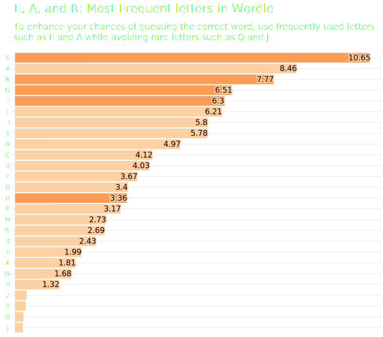

Tips & Tricks for Enhancing Your Wordle Skills
It’s been a tough couple of months for Sudoku, Spelling Bee, and The Crossword which in January of this year were faced with their own internal competition, namely the up-and-coming word game: Wordle.
Created by software engineer Josh Wardle (hence, Wordle) as a gift to his partner, Palak Shan, Wordle is currently outranking every other game on The New York Times’s Play Section with over two million players per month.
Wordle has a satisfying simple aesthetic reminiscent of the first games published during the internet’s infancy. It consists of a simple five by six grith where the player has six tries to guess a five-letter word. The player will guess a random word on the first try after which each letter will turn a distinct color signifying how close it is to the correct word: a grey tile will appear if the letter is not in the word at all, a yellow tile if it’s in the word but in the wrong place, and a green tile if it’s the right letter in the right place.
As a Wordle enthusiast, I’ve tried to adopt a few tricks along the way to enhance my chances of guessing the word on the fewest number of attempts. For instance, I always guess a word with several vowels such as “Adieu” or “Audio.” In some cases, I look up Five Letter Words for inspiration even though some people might call this cheating.
But I wanted to take this one step further to enhance my chances of getting it right (ideally on the third try). Fortunately, Wordle published a file containing all the possible correct solutions to each day's problem. There are in total 2,252 possible words. By analyzing this file, we can see what letters are used the more frequently overall:

The letters E and A show up in about 20% of all Wordle solutions whereas letters such as Q and J show up in less than 2% of the times. A good strategy is to find a five letter word that contains some of the most frequent letters. The best word I can come up with is “OTHER” which has four letters in top five most frequently used.
Let’s take this one step further and look at what letters are the most common in each of the five sloths. Intuitively, we know that more words end rather than start with the letter Y but for other letters such as D and H it’s harder to imagine wherein a word they’re most likely to appear. The heatmap below shows the likelihood of each letter to appear in each of the five sloths. The darker the color, the more likely the letter is to be in a slot.
The depth of the color represents the frequency of the letter used in one of the five slots. The deeper the color, the more frequently it appears. Some words are more likely to appear than others. Based on this analysis, likely words to appear are: sadly, shady, and shaky

Based on this analysis we can conclude that: S is the most common first letter; A is the most common second letter, A is the most command third letter; E is most command fourth letter; and E/Y are the most common fifth letter
Unfortunately, SAAEY isn’t a word. But there are other words that come close enough such as SADLY and SHADY (but let me know if you can think of a better word)
Once you’ve found the word of the day, you can brag about your results on social media by clicking the “Share” button. This will allow you to copy and paste the green and yellow squares to any social media platform without spoiling the answer.